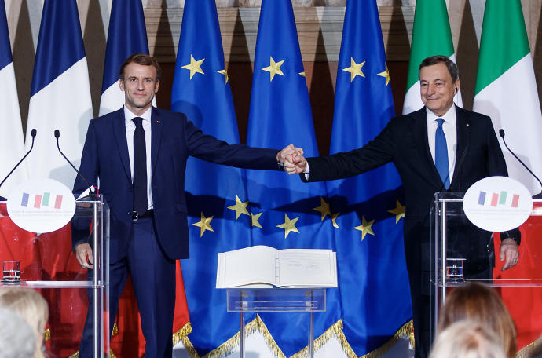

Francia e Italia firman un nuevo tratado de cooperación
Francia e Italia firmaron este viernes en Roma en el cuso de una ceremonia solemne un tratado bilateral de cooperación reforzada destinado a consolidar la relación mutua y clave para fortalecer la Unión Europea.
Elecciones en Honduras 2021: las claves de una votación deslucida por las acusaciones de fraude
El mes electoral en Latinoamérica lo cerrarán los hondureños, que el próximo domingo acuden a las urnas para elegir al sucesor del controvertido presidente Juan Orlando Hernández. Serán unas elecciones deslucidas por acusaciones de fraude y los señalamientos de supuestos vínculos con el narcotráfico de Hernández, que han sido investigados por las autoridades de Estados Unidos.
Portugal impondrá un 'cerrojazo' tras la Navidad: teletrabajo obligatorio y cierre de escuelas, bares y discotecas

Portugal, un país con uno de los índices de vacunación anticovid más altos del mundo, anunció este jueves medidas para frenar el aumento de contagios por covid-19, incluyendo una semana de restricciones tras las fiestas de fin de año.